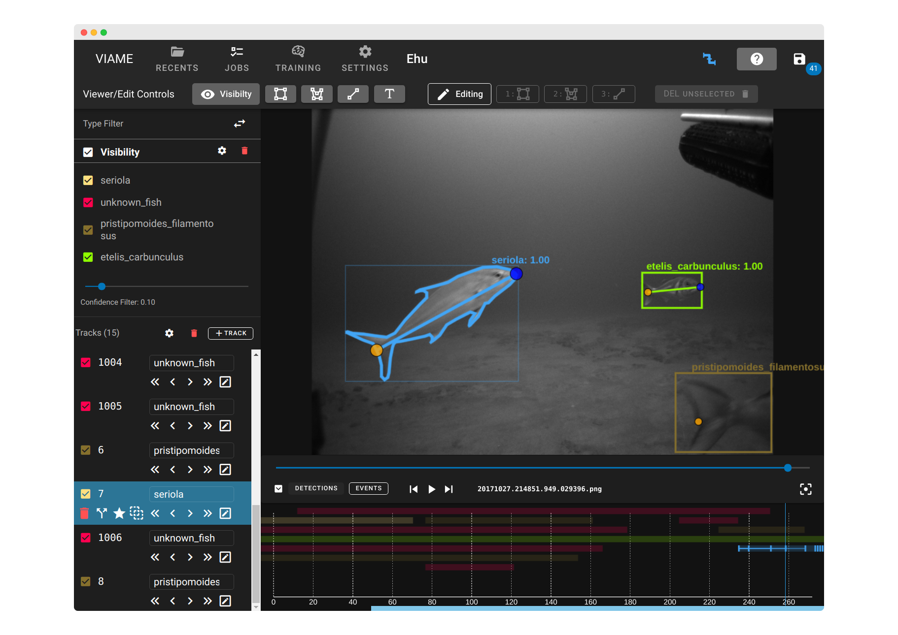

DIVE Documentation
This is the documentation for DIVE, an open-source annotation system that integrates with VIAME.

Get Help
- For problems, feature requests, etc. contact us through our discussion board. This board is for all topics related to VIAME or DIVE.
- You can also email
viame-web@kitware.com
VIAME Web (Browser) Version
VIAME Web is available at viame.kitware.com.
Info
VIAME Web is automatically updated and down for 10 minutes on 2 am EST/EDT Thursdays
DIVE Desktop Version
A full desktop version is also available.
Features
Current capabilities of DIVE include:
- User import of frame images or video.
- Playback of existing annotation data.
- Manual creation of new annotations.
- Automatic object detection and tracking of user-imported data.
- Manual user refinement of automatically generated tracks
- Export of generated annotations.
Definitions
- DIVE is the annotator and data management software system. It is our name for the code and capabilities, including both web and desktop, that can be deployed and configured for a variety of needs. It integrates tightly with VIAME, but is separate from that tool suite.
- The desktop and girder (web) systems are known as DIVE Desktop and DIVE Web.
- VIAME stands for "Video and Image Analytics for Marine Environments". It is a suite of computer vision tools for object detection, tracking, rapid model generation, and many other types of analysis. Get more info at viametoolkit.org
- VIAME Web is the specific DIVE Web deployment at viame.kitware.com. It includes a web-based annotator with the capabilities to run VIAME workflows on user-provided data. You may deploy the web system into your own labratory or cloud environment.